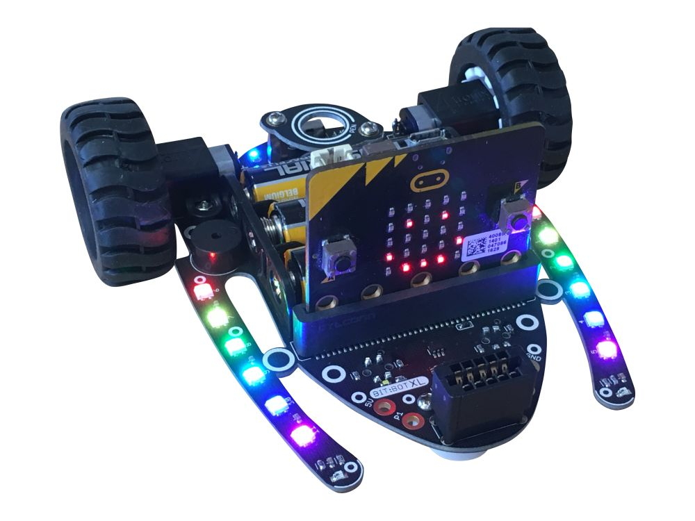

Library: bitbotXL.py or bitbotClassic.py — upload it with your main.py

from microbit import * import bitbotXL as bot # BitBot XL # import bitbotClassic as bot # BitBot Classic bot.move_forward(50, 1000) print(bot.get_distance())
Import the library that matches your robot. Always use the bot. prefix.
Speed is 0–100 (default 50). duration_ms = how long, then it
stops. Leave it out and the robot keeps going until stop().
move_forward(speed, duration_ms) | Drive forwards |
move_backwards(speed, duration_ms) | Drive backwards |
turn_left(speed, duration_ms) | Spin anticlockwise |
turn_right(speed, duration_ms) | Spin clockwise |
stop() | Stop both motors |
bot.turn_left(50, 600) # spin 0.6 s bot.move_forward() # keep going... sleep(1000) bot.stop()
12 RGB LEDs numbered 0–11: 0–5 left arm, 6–11 right arm. led =
one LED, leds = all of them.
led_on(led, colour) | Turn on one LED |
led_off(led) | Turn off one LED |
leds_on(colour) | Turn on all LEDs |
leds_off() | Turn off all LEDs |
Colours: (r, g, b) each 0–255 (keep under ~60, they’re bright),
or bot.RED GREEN BLUE YELLOW PURPLE WHITE.
bot.leds_on(bot.RED) bot.led_on(3, (0, 0, 50))
buzzer(duration_ms) | Beep (fixed pitch, default 200 ms). Waits until the beep ends. |
get_distance() | Distance in cm, or -1 if no echo (check for this!) |
get_left_light()get_right_light() | Light level 0 (dark) to 1023 (bright) |
get_left_line()get_right_line() | 1 = over the line, 0 = not |
Ultrasonic works best on hard, flat objects. Leave ~50 ms between readings. Light values depend on the room — measure your own thresholds.
bot.move_forward(40)
while True:
d = bot.get_distance()
if 0 <= d < 15:
bot.stop()
bot.buzzer(300)
break
sleep(60)
Both libraries have exactly the same functions, so only the
import line changes between robots.
| BitBot XL | Upload bitbotXL.py |
| BitBot Classic | Upload bitbotClassic.py |
Classic only: the line sensors share their pins with the buttons (left sensor with B, right sensor with A), so don’t use the buttons in a program that follows a line.